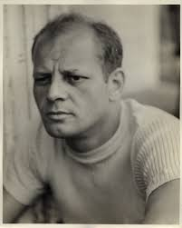
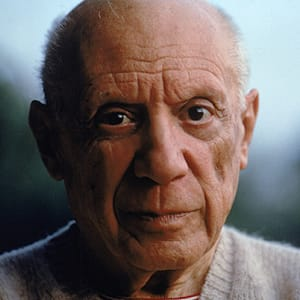
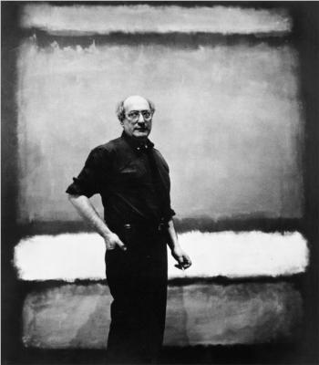
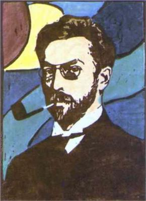

Abstract Art is art that does not attempt to represent external reality, but seeks to achieve its effect using shapes, forms, colors, and textures. It uses a visual language of shape, form, color and line to create a composition which may exist with a degree of independence from visual references in the world.
   